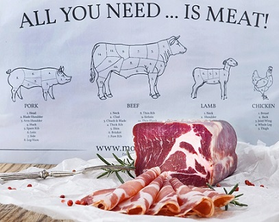
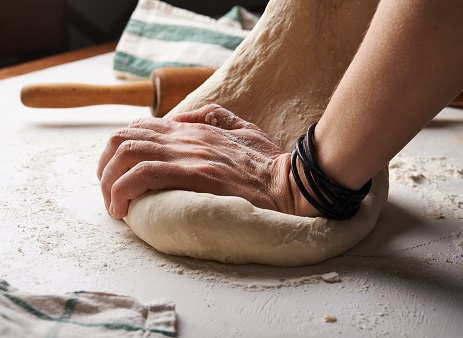
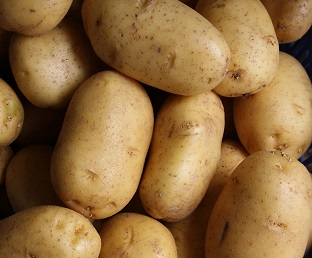

Kött
När liggande gårdar erbjuder kött av högsta kvalitet, tack vare en stressfri miljö, näringsrik mat och fritt utlopp för djuren. Detta resulterar i en saftig, smakrik och mör köttprodukt. Dessutom stödjer man en hållbar och etisk köttproduktion genom att välja kött från dessa gårdar.

Bröd
Hamburgarbrödet som bakas på restaurangen är helt fantastiskt. Det är färskt, saftigt och mjukt, och dessutom är det helt anpassat till burgaren. Brödet är den perfekta balansen mellan sött och salt, och gör att burgaren smakar ännu bättre. Att äta en burgare med bröd som är bakat på restaurangen är en upplevelse som verkligen sticker ut.

Potatis
Potatisen blir helt otroligt god när den serveras som pommes. Med rätt tillagning blir pommes frites krispiga på utsidan och mjuka på insidan. Den salta smaken och den perfekta konsistensen gör dem till det ultimata tillbehöret till en burgare eller en annan måltid. Potatisen kan även kryddas med olika smaker för att ge dem en extra touch av godhet. Pommes är helt enkelt en oslagbar favorit!